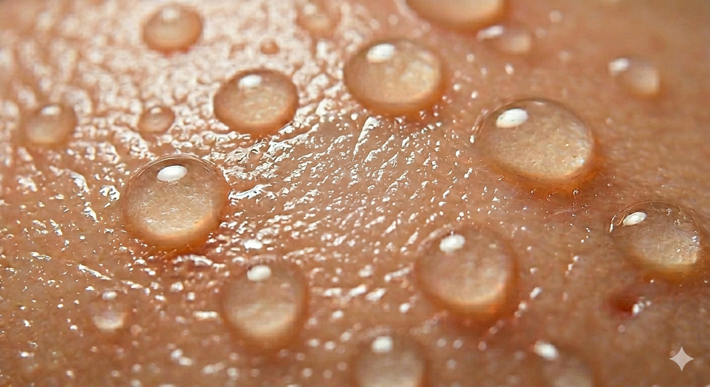
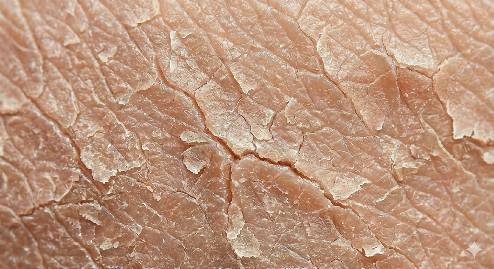
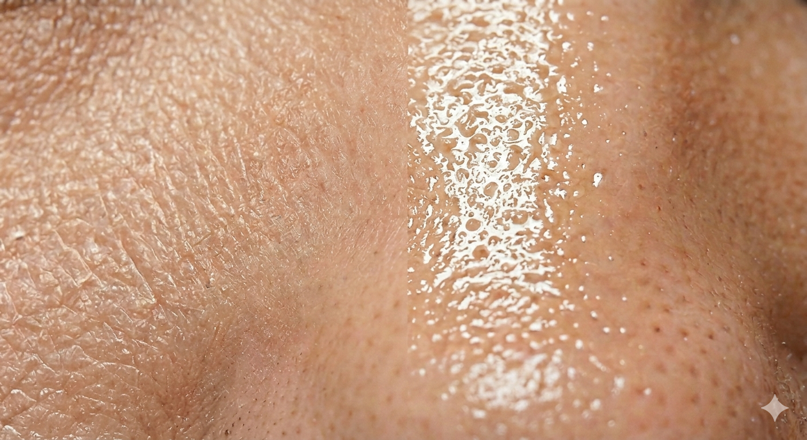
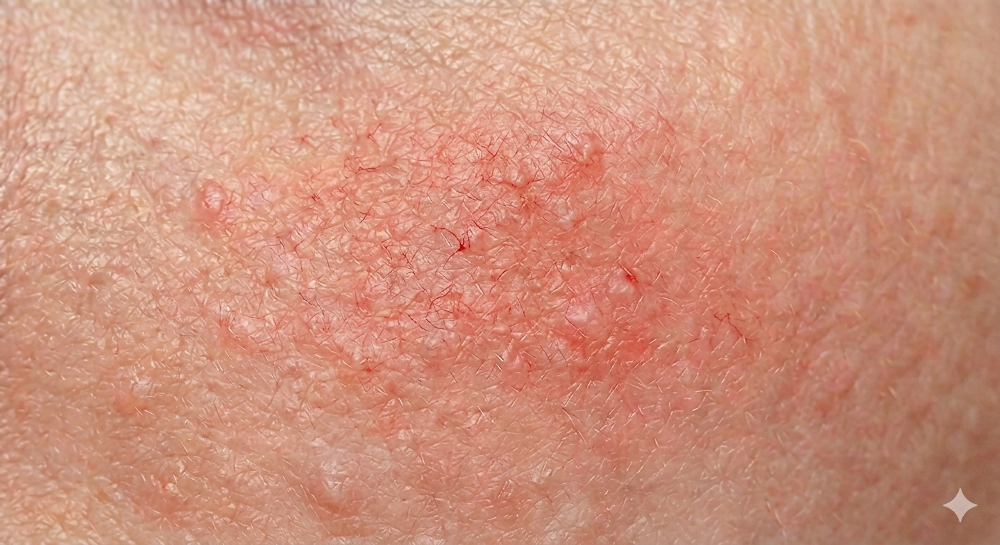

A Beginner friendly routine based on your skin type
This website is a begginner friendly guide to building a K-Beauty skincare routine. It is designed to help users understand the basic steps of skincare, identifying their skin tyep, and choosing products that work best for them.
K-beauty focuses on gentle, consistant care and emphasizes hydration, prevention, and long term skin health. This guide breaks down each step in a simple and easy to follow way, making skincare more approachable and understandable to everyone.




K-Beauty routines are known for their multi-step layered approaches. They focus on deep cleansing, hydrating, and treating the skin using lightweight products. Each step is designed to prepare the skin for the next, allowing for better absorption and long term results. The routine begins with cleansing to remove impurities and ends with protecting the skin barrier from damage. It emphasizes consistency, gentle application, and hydration as the foundation of healthy skin. Over time, this method helps improve texture, brightness, and overall skin balance.
Although it is called a 10-step routine, it does not imply using the exact 10 steps every day. Many people adjust the number of steps depending on their skin type, concerns and time it takes to fullfill the routine. Some people simply their routine to 5-7 steps, only using what they need daily and the rest a few times a week. Overall, this 10-step routine acts as a guideline for learning about the skin care steps and how to layer them for what needs.
An oil cleanser is used to eliminate all the extra sebum the skin has built overnight in the mornings and is also typically used at night to remove makeup, sunscreen and excess sebum that builds up throughout the day. It works by dissolving oil based impurities that cannot be removed with water alone. To use, apply 1-2 pumps onto dry hands and a dry face, then massage gently for around 60-90 seconds, focusing on areas like the nose and chin, usually where the most oil serums of the skin build up. Then add a small amount of water to activate the cleanser into a milky white formula. Massage the skin and then rinse thoroughly. This step is essential for preventing clogging pores and breakouts, especially if you wear SPF or makeup.
A water-based cleanser is used to remove water-based impurities like sweat, dirt, and any remaining residue after the oil cleanser. Use a small pump with water and gently massage your face for 60-90 seconds. Focus again on areas where oil tends to build up and rinse afterwards with lukewarm water.
Exfoliation removes dead skin cells that can make the skin look dull and rough. Chemical exfoliants such as AHAs (for surface exfoliation) and BHAs (for pores) are commonly used in K-Beauty. However, you should avoid mixing exfoliators with strong active ingredients like Vitamin C serums or retinol. Instead you should alternate to ensure you do not overlap these ingredients as they can cause irritation and sensitivity to your skin when used together. When used apply a small amount after cleansing onto the skin all over your face. The wait time depends on what kind of exfoliator you are using but will most commonly be reported on the product description. When used correctly, this step helps smooth skin texture.
Toner is used immediately after cleansing to restore hydration and balance the skin. Unlike traditional toners, K-beauty toners are designed to be hydrating and soothing. Apply the toner after cleansing with clean hands and with gentle patting. This step prepares the skin for absorption of essence and serums that follow.
Essence is a lightweight product that adds hydration while improving skin texture and overall skin glow. It often contains ingredients that support skin repair and elasticity. Use 1-2 pumps after toner has absorbed into skin and gently pat instead of rubbing. This step helps retain moister and enhance absorption for long term radiant skin.
Serums and ampoules are concentrated treatments designed to target specific skin concerns such as acne, pigmentation, or dryness. Apply evenly across the face and gently press on the face. This step is very custom based on your skin needs. Some people use 1-2 of these serums/ampoules; however, ensure not to overload the skin with too many active ingredients at once.
For Example:
Sheet masks provide an intensive boost of hydration and nutrients to the skin. They are typically left in the skin for 10-20 minutes, allowing the serum to full absorb. They can be used in the morning or evening/night based on your skin goal and time that you have to implement this step into your routine. After removing your mask ensure you pat the remaining essence onto the skin instead of washing it off.
Eye cream is used for the delicate skin around the eyes. This step helps hydrate the area and improve the appearance of fine circles, puffiness, dryness, and fine lines over time. Different eye creams focus on your specific concerns. Remember to tap onto the skin gently without too much pressure.
For example:
Moisturizer locks in all the hydration from previous steps and helps maintain a strong skin barrier. It prevents moisture loss and keeps the skin soft and well balanced. Use a good amount of product of product for your face, apply evenly across face and neck and remember that selecting a moisturizer depends on your skin type and the ingredients it contains.
Sunscreen is the final and most important step in the morning routine. It protects the skin from harmful UV rays that cause long term skin damage. Apply enough to ensure whole face is covered and it should always be applied after moisturizer. If you are outside for a longer period of time, ensure you reapply to ensure constant sun protection.
Even though K-beauty routines are designed to be gentle and effective, most people unintentionally make mistakes that reduce results. Most issues come from using too many products at once, not waiting enough time for product absorption, applying products in the wrong order and understanding how active ingredients interact. Another common problem is expecting fast results after only using a consistent skincare routine for a short period of time. K-beauty skincare works best when the skin barrier is protected, and products are layered in a timely manner. Avoiding these mistakes can help your routine become more effective towards your overall skincare goals.
A common error is layering multiple strong treatments like vitamin C, retinol, exfoliants, and acids all in the same routine. This can overload the skin and potentially cause redness, peeling or sensitivity. In a routine, it is better to alternate products on different days rather than combining everything at once. This is because the skin needs time to adjust and repair between treatments.
Another common mistake is that people tend to continue adding steps when the skin has not fully absorbed the previous product used. This can cause products to mix on the surface of the skin instead of being fully absorbed which leads to a decrease in product effectiveness and pilling or flakes on the skin. Remember to be patient when following a skincare routine and consider reducing some steps if you feel like the wait time to complete the routine is longer than you‘d like.
Skincare products are designed to work in layers from thinnest to thickest texture. A common mistake is applying thick creams before toners and serum which does not allow each product to properly penetrate into the skin. Remember to always do your research because following the correct product and step sequence is essential to having an effective routine.
Another common mistake is immediately applying a new skincare product all over your face without testing how the skin will react to that product first. This can be very risky because some ingredients can worsen your skin. A patch test helps you see how your skin reacts by usually applying a small amount of product in areas like behind the ear or on your neck. Wait at least 24 hours to check for any reaction before implementing a product into your routine.
Retinol is a common product used incorrectly. It is very powerful and can make you skin extra sensitive. For this reason is it advised to best use at night and in small doses 2-3 times per week, especially for beginners for the skin to get used, to the ingredients. While retinol is best recommended at night, some people use retinol in the morning, but must be used with strict conditions such as a strong and full-coverage sunscreen when the skin is exposed to sunlight.